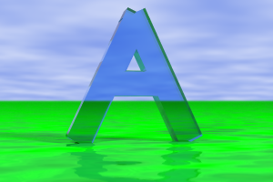

A merge ties several entities together, as a union would do, but removing all internal surfaces.
Internal surfaces
The following images show the problem solved by the merge operation:
|  |  |
The rightmost image shows a union assembled from simple boxes. The boxes are made of glass, so you can see the internal surfaces. We have a cosmetic problem, but there are more headaches on the way. The assembled shape doesn't correspond to any physical situation: in the real life, two solids cannot share their space.
The leftmost image was generated with merge. The inner surfaces has disappeared.
Syntax
Unlike unions, merges are material shapes: they must always have an associated material definition. This is how merge is used:
- Merge(shape1, shape2, material)
The algorithm for rendering a merge is slower than the algorithm used with unions. Use merge only when dealing with transparent materials.
See also
Home | Small Instantiation Language overview | CSG operations | Union | Difference | Intersection | Cone | Cylinder | Sphere | Torus